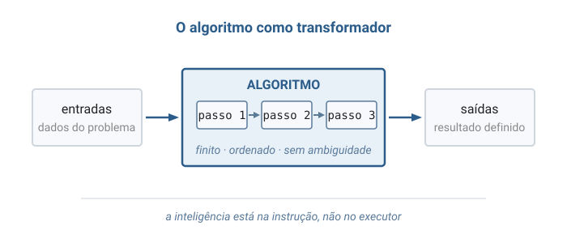
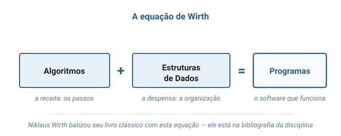
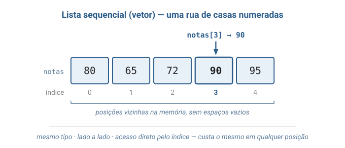
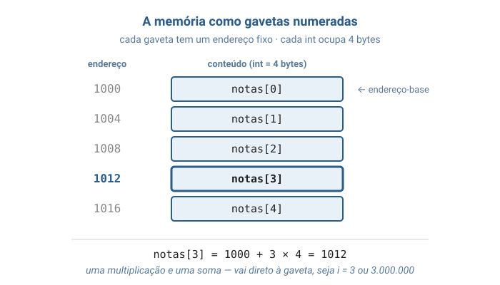
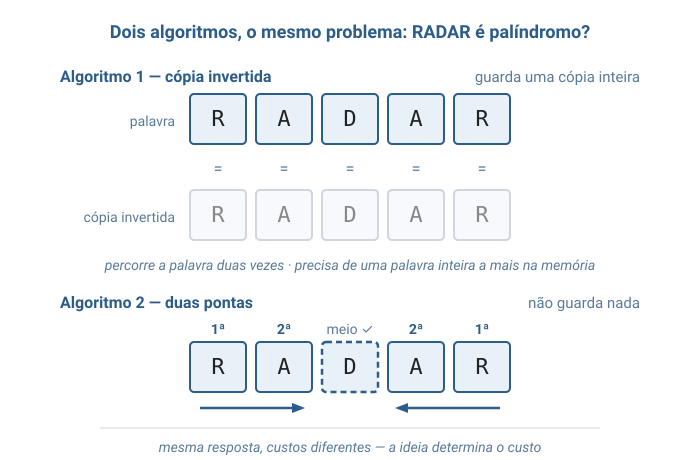
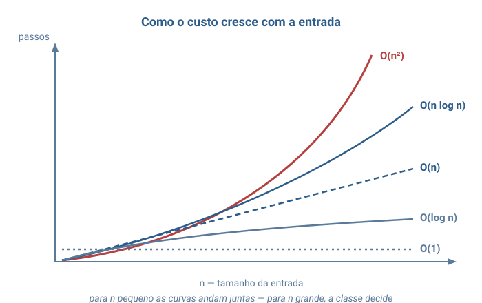

Algoritmos e Estruturas de dados
Unirios
Aula 01
Algoritmos, Estruturas de Dados e Complexidade
Algoritmos · Linguagem C · Listas Sequenciais · Big O
Aula conceitual — o vocabulário que usaremos em toda a disciplina.
Camada 1
Introdução
Ensine alguém a preparar um café — mas alguém que segue instruções ao pé da letra e não improvisa nada. "Água quente"? Quente quanto? Quanta água?
A inteligência está na instrução, não no executor.
A humanidade sempre fez isso
Instruções precisas que qualquer executor reproduz existem há milênios:
- receitas de cozinha
- partituras musicais
- manuais de montagem
- moldes de costura
O computador é só o executor mais literal de todos.
Camada 2
Isso tem nome: algoritmo
Algoritmo (algorithm): sequência finita de passos não ambíguos que transforma entradas em saídas.
A palavra vem de al-Khwarizmi, matemático persa do século IX — de outra obra dele herdamos também "álgebra".
Mais antigo que o computador
A ideia não nasceu com a eletrônica:
- ~300 a.C. — Euclides descreve o algoritmo do MDC nos Elementos
- 1843 — Ada Lovelace publica o primeiro algoritmo para uma máquina
O de Euclides funciona até hoje, inalterado.
1936 — Turing define o que é computar
Alan Turing imaginou uma máquina radicalmente simples — fita, cabeçote, tabela de regras — e provou: tudo que é calculável por procedimento mecânico, essa máquina calcula.
Computar é executar um algoritmo.
Artigo On Computable Numbers, 1936 — todo computador é uma encarnação dessa máquina.

Turma, Alan Kay — criador do Smalltalk e Prêmio Turing de 2003 — dizia que "a melhor maneira de prever o futuro é inventá-lo". Para ele, o computador não é uma calculadora grande: é um meio de expressão, como o papel e o cinema. O que se escreve nesse meio são algoritmos — e é isso que vocês vão aprender a escrever aqui.
A segunda metade: estrutura de dados
Todo algoritmo opera sobre dados — e dados precisam estar organizados.
Estrutura de dados (data structure): o arranjo dos dados na memória + as operações permitidas, projetado para tornar certos acessos baratos.
Ver o capítulo introdutório de Backes; Veloso & Pereira, capítulo de abertura.
E como comparar algoritmos?
Análise de complexidade: medir quanto um algoritmo consome à medida que a entrada cresce.
- Tempo — número de passos executados
- Espaço — memória adicional usada
Toscani & Veloso, capítulos iniciais.
O que um algoritmo não é
Três confusões comuns para evitar desde já:
- Não é código-fonte — o de Euclides tem 2.300 anos; C tem ~50
- Não aceita ambiguidade — "tempere a gosto" não é passo de algoritmo
- Não roda para sempre — sem terminar, não é algoritmo
Camada 3
As cinco propriedades
Para merecer o nome de algoritmo, uma sequência de passos precisa de:
- Finitude — termina, para toda entrada válida
- Definitude — cada passo tem uma só interpretação
- Entradas — zero ou mais valores fornecidos
- Saídas — um ou mais resultados definidos
- Efetividade — passos executáveis mecanicamente
A ferramenta: a linguagem C
Para escrever algoritmos de verdade, precisamos de uma linguagem. A nossa é o C — criado por Dennis Ritchie, nos Laboratórios Bell, no início dos anos 1970, para escrever o UNIX.
Pequena e explícita: cada passo aparece no código — ideal para enxergar o custo.
Meio século depois, C segue em toda parte: o núcleo do Linux e o interpretador do Python são escritos em C.
Tipos básicos
Em C, todo dado declara seu tipo — o que ele guarda:
int idade = 20; /* numero inteiro */
float altura = 1.75; /* numero com casas decimais */
double preco = 19.90; /* decimal com mais precisao */
char letra = 'A'; /* um unico caractere */Funções: a cara de um algoritmo
Um bloco nomeado que recebe entradas e devolve uma saída — soa familiar?
int soma(int a, int b) {
return a + b;
}
soma recebe dois inteiros e return devolve a
resposta — o int à esquerda é o tipo dela.
Decidindo: if e else
Escolher entre caminhos conforme uma condição:
if (idade >= 18) {
printf("maior de idade");
} else {
printf("menor de idade");
}
printf é a função que escreve na tela.
Repetindo: while e for
Repetir enquanto uma condição valer — o coração de quase todo algoritmo:
int i = 0;
while (i < 5) {
printf("%d ", i);
i = i + 1;
}for (int i = 0; i < 5; i = i + 1) {
printf("%d ", i);
}
/* o mesmo, em uma linha */
Ambos imprimem 0 1 2 3 4 — o for empacota início, condição e avanço.
A primeira estrutura: lista sequencial
Nosso primeiro jeito de organizar dados: uma fileira de elementos do mesmo tipo, lado a lado, cada um com um número — o índice.
Uma rua de casas numeradas: sabendo o número, você vai direto — sem bater de porta em porta.
O vetor em C
Em C, a lista sequencial é o vetor (array):
int notas[5]; /* 5 posicoes */
notas[0] = 80; /* indices comecam em 0! */
notas[4] = 95; /* ultima posicao valida (0 a 4) */
char palavra[] = "radar"; /* palavra = vetor de char */
Acesso direto: notas[3] custa o mesmo com 5 ou 5 milhões de posições.
O preço: tamanho fixo, e inserir no meio empurra todos os seguintes — limitação que motivará as listas encadeadas, aulas adiante.
O que é um array, com precisão
Um array de tamanho n: n elementos
do mesmo tipo, numerados de 0 a n − 1,
em posições consecutivas da memória.
- mesmo tipo → toda posição ocupa o mesmo espaço
- consecutivas → sem buracos entre os elementos
- índice a partir de 0 → amarra cada número a uma posição
O array de C não é o array de Python
Em Python e JavaScript, um "array" mistura
tipos ([1, "dois", 3.0]), cresce e encolhe sozinho — comodidade
que guarda controle extra e, por dentro, referências a valores
espalhados.
O array de C é o osso nu: tamanho fixo, um tipo, valores de fato lado a lado — e sem rede de proteção.
As estruturas "espertas" de Python e JS são construídas em cima de arrays simples como este.
A memória como gavetas numeradas
Pense na RAM como uma tabela de gavetas: cada uma tem um
endereço (seu número) e guarda um número fixo de
bytes. Um int ocupa tipicamente 4.
int notas[5] reserva 5 blocos seguidos e guarda um só valor:
o endereço-base onde o vetor começa.
Do índice ao endereço: a conta
Com base em 1000 e int de 4 bytes, o índice vira endereço por
uma conta só:
endereço de notas[i] = base + i × tamanho
notas[3]= 1000 + 3 × 4 = 1012 — uma multiplicação e uma soma, sejai= 3 ou 3 milhões.
Aqui nasce o O(1) do acesso por índice — e o motivo de o índice começar em 0: o primeiro fica no próprio endereço-base.
O mesmo problema, vários algoritmos
RADAR, num vetor de caracteres, se lê igual de trás para a frente — é um palíndromo. Como um computador decide isso? Dois jeitos:
- Cópia invertida — inverte a palavra e compara as duas: gasta uma cópia inteira
- Duas pontas — compara primeira × última e caminha para o centro: não gasta nada
Mesma resposta, custos diferentes — a ideia determina o custo.
Dois lados da mesma moeda
As duas pontas só funcionam porque o vetor dá acesso direto à última letra. Se as letras chegassem uma a uma, seria preciso guardar tudo antes.
Não existe organização perfeita — existe a certa para a pergunta: "o que você quer que seja barato?"
Propriedades que sempre valem
Três verdades que acompanham a disciplina inteira:
- ✅ Algoritmo correto funciona para toda entrada válida — não só as fáceis
- ✅ O custo é do algoritmo, não da máquina — trocar de computador não muda os passos
- ✅ A estrutura de dados precede o algoritmo — dados desorganizados limitam tudo
Camada 4
Uma garantia poderosa
Turing provou que a máquina não importa — o que conta é a sequência de passos.
Consequência prática: para medir um algoritmo, basta contar passos. Em qualquer computador, a contagem é a mesma.
A notação Big O
Não contamos passos exatos — respondemos só uma pergunta: quando a entrada cresce, o trabalho cresce em que ritmo?
O(n)
Lê-se: "cresce no ritmo de n" — dobrou a entrada, dobrou o trabalho.
A definição matemática completa está no material escrito da aula.
Como classificar: um exemplo
Um algoritmo faz 3n + 5 passos para uma entrada de tamanho n. Qual é o ritmo?
- o + 5 vira detalhe quando n cresce
- o 3× muda a velocidade, não o ritmo
Sobra o essencial: cresce no ritmo de n → O(n).
Tempo × espaço
A mesma notação mede duas grandezas independentes:
- Tempo — quantos passos, em função de n
- Espaço — quanta memória adicional, em função de n
Rápido e guloso em memória, ou econômico e lento — mais um trade-off.
Camada 5
As classes de crescimento
Da mais lenta para a mais explosiva — passos aproximados para n = 1.000:
| Classe | Nome | n = 1.000 | Exemplo |
|---|---|---|---|
| O(1) | constante | 1 | acessar posição de vetor |
| O(log n) | logarítmica | ~10 | descartar metade a cada passo |
| O(n) | linear | 1.000 | verificar um palíndromo |
| O(n log n) | linearítmica | ~10.000 | boas ordenações |
| O(n²) | quadrática | 1.000.000 | laços aninhados |
| O(2ⁿ) | exponencial | ~10³⁰¹ | testar subconjuntos |
O hardware não salva
Máquina de 100 milhões de passos/segundo, entrada de n = 1.000.000:
- algoritmo O(n log n) → 0,2 segundo
- algoritmo O(n²) → ~10.000 segundos ≈ 3 horas
Um computador 10× mais rápido só adia o problema quadrático.
Espaço: o mesmo raciocínio
O palíndromo já mostrou — dois caminhos, ambos O(n) em tempo:
- cópia invertida → memória adicional O(n)
- duas pontas → memória adicional O(1)
Quando a entrada é grande, é o espaço que decide qual cabe na memória.
Camada 6
Este vocabulário volta em toda aula
Cada estrutura da disciplina é uma resposta de custo diferente:
- Listas encadeadas — inserir no início O(1); buscar O(n)
- Pilhas e filas — tudo O(1); a restrição é o preço
- Árvores de busca — descartam metade dos candidatos a cada passo
- Tabelas hash — O(1) no caso médio
- Ordenação — a jornada de O(n²) até O(n log n)
Algoritmos de busca (linear e binária) ganham capítulo próprio adiante.
Variantes da análise
Nesta disciplina analisamos o pior caso. Há mais:
- caso médio e melhor caso
- notações Ω (piso) e Θ (ritmo exato)
Toscani & Veloso desenvolvem com rigor — voltamos a elas na aula de ordenação.
Bloco 2
Visualização gráfica
Seis diagramas: o transformador, a equação, a lista sequencial, o índice virando endereço, dois algoritmos em disputa e as curvas de custo.
O algoritmo como transformador
A imagem mental mínima — vale para Euclides e para uma IA: entradas, passos finitos e ordenados, saídas.

A equação de Wirth
Um programa é a soma das duas metades da disciplina — nenhuma funciona sozinha.

A lista sequencial
A rua de casas numeradas: mesmo tipo, lado a lado, e a seta do
acesso direto — notas[3] chega sem passar pelas anteriores.

Do índice ao endereço
A RAM como gavetas de endereço fixo, cada int em 4 bytes.
A conta base + i × tamanho vai direto à gaveta — a origem do O(1).

Dois algoritmos, um problema
A mesma palavra, dois caminhos: a cópia gasta memória; as duas pontas caminham para o centro sem gastar nada.

As curvas de crescimento
As classes da tabela desenhadas juntas: no começo andam próximas — depois a quadrática dispara.

Bloco 3
Por que isso existe?
"Como uma IA como o ChatGPT gera cada palavra em fração de segundo, se precisa executar bilhões de operações?"
Não há mágica — há uma corrente de algoritmos
Para cada palavra da resposta:
- tokenização — fatiar o texto em pedaços
- álgebra linear — bilhões de multiplicações otimizadas
- atenção — decidir que trechos da conversa pesam mais
- amostragem — escolher a próxima palavra
Um elo com custo descontrolado e a resposta não chega nunca.
A complexidade moldou o produto
Os algoritmos de atenção originais custam tempo quadrático no tamanho do texto — dobrar a conversa quadruplica o trabalho.
Por isso as primeiras IAs tinham memória curta. Alargar esse limite exigiu algoritmos melhores, não só máquinas maiores.
Quem entende o custo dos algoritmos entende por que a tecnologia tem a forma que tem.
O mesmo vale para o que você já usa
- Buscador — não procura: consulta índices prontos, trocando espaço por tempo
- GPS — caminho mínimo que descarta quase todas as rotas sem examiná-las
Décimos de segundo em vez de horas — sempre a mesma razão: uma ideia melhor.
Turma, o algoritmo de Euclides tem mais de 2.300 anos e continua em serviço: ele roda dentro dos sistemas de criptografia que protegem suas conversas hoje. O hardware passa, a ideia fica — um bom algoritmo não envelhece.
Bloco 4
Analogias
A receita e a despensa
A receita é o algoritmo; a despensa, a estrutura de dados.
A mesma receita numa despensa organizada sai em metade do tempo. A receita não mudou — a organização dos dados mudou o custo.
E a despensa ideal do restaurante não é a do estoque de mercado — cada padrão de uso pede uma organização.
A partitura e a orquestra
Qualquer orquestra do mundo, seguindo a mesma partitura fielmente, produz a mesma sinfonia.
A inteligência está na escrita, não na execução — exatamente a máquina de Turing. E as instruções precisam ser efetivas: "toque algo emocionante" não é instrução.
Turma, Beethoven compôs parte de suas últimas obras já profundamente surdo — escreveu partituras que nunca ouviu executadas. Quem descreve o procedimento não precisa executá-lo: essa é exatamente a separação que Turing formalizou em 1936.
Bloco 5
Exercícios práticos
Dois exercícios com vetores — tentem antes de ver cada resposta.
Turma, antes de resolver o próximo exercício, façam um palpite: quantas comparações as duas pontas precisam para decidir que RADAR é palíndromo? E para uma palavra de 1.000 letras? Anotem o chute, executem o passo a passo e confiram quem acertou.
Exercício 1 — Palíndromo na mão
Palavra RADAR (posições 0–4). Execute as duas pontas:
anote as posições i e j, as letras e a decisão
de cada passo. Quantas comparações foram? E no máximo, para uma palavra
de 1.000 letras?
| Passo | i | j | Letras | Decisão |
|---|---|---|---|---|
| 1 | 0 | 4 | R = R | iguais → avança |
| 2 | 1 | 3 | A = A | iguais → avança |
| — | 2 | 2 | — | encontro no meio → é palíndromo |
Exercício 2 — Desafio: Two Sum
Dado um vetor e um alvo, achar duas posições cujos valores somam o alvo. Testando todos os pares com laços aninhados:
for (int i = 0; i < n; i = i + 1)
for (int j = i + 1; j < n; j = j + 1)
if (lista[i] + lista[j] == alvo)
printf("posicoes %d e %d", i, j);
Para [4, 2, 7, 5] e alvo = 9: liste os pares testados.
Qual o tempo no pior caso? Por que as duas pontas não servem aqui?
| Par | Soma | Decisão |
|---|---|---|
| 4 + 2 | 6 | ≠ 9 |
| 4 + 7 | 11 | ≠ 9 |
| 4 + 5 | 9 | posições 0 e 3 |
Referências
- Backes, A. R. — Algoritmos e Estruturas de Dados em Linguagem C — capítulo introdutório.
- Veloso, P.; Pereira, S. do L. — Estruturas de Dados em C — capítulo de abertura.
- Toscani, L. V.; Veloso, P. A. S. — Complexidade de Algoritmos — capítulos iniciais (Big O, Ω, Θ).
Leituras complementares:
- Wirth — Algoritmos e Estruturas de Dados — o livro da equação.
- Schildt — C Completo e Total — preparação para as aulas com código.
- Turing — On Computable Numbers (1936) — leitura histórica.
Fim — Aula 01
Próxima aula em breve
Vocês já têm o vocabulário — algoritmo, estrutura de dados, Big O — e as primeiras ferramentas: a linguagem C e o vetor. Nas próximas aulas, os algoritmos ganham código completo.